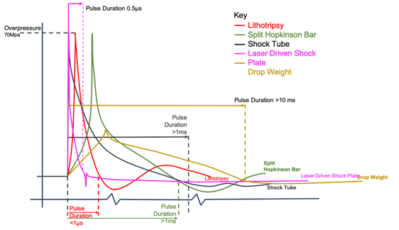
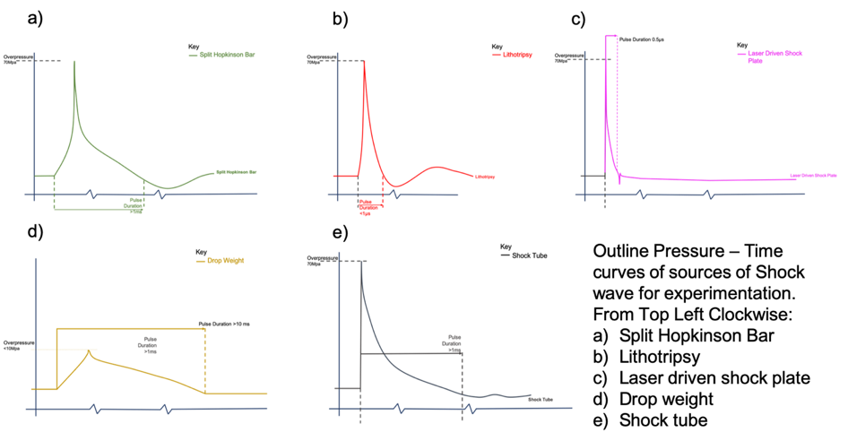

Appendix Figure 1.7(b): Pressure vs Time
profiles of different shock waves sources. The figure overlays the pressure
time profiles on axis of Overpressure and Time. The figure demonstrates the
differences in rise time and duration of the different loading conditions. It illustrates
how although each modality may be generating similar overpressure, the duration
(and rise time) are not identical to a modified friedlander waveform.
Furthermore in some circumstances (Such as a drop weight) the overpressure and
duration are not similar to the loading conditions of a shock wave.

Appendix Figure 1.7(b): Pressure vs Time
profiles of different shock waves sources. The figure (a) is deconstructed to
show each modality on its own axis.
|
Year |
Author |
Animal |
Source |
Set Up |
Outcomes |
|
2016 |
Eftaxiopoulou et al(64) |
Rat |
Compressed air driven shock tube |
Anaesthetized Sprague dawley rats,
Collections of blood, plasma for NK cells, Neutrophils, Monocytes and T
cells. Elisa for Cytokine analysis. Liver, Lung and quadriceps samples for
histology – H&E. |
Focused delivery of air blast shock waves
causes changes in circulating inflammatory cells and cytokines. Changes are
most notably dependent on the duration of the wave. No histological damage in
muscle, lung, liver. |
|
2015 |
Spear et al(65) |
Rabbit |
Compressed air driven air storage cylinder with
solenoid valve. |
Circulating endothelial cells, plasma and excision of
gastrocnemius for RT-qPCR for TNF-alpha, e-selecting, interleukin-6,
thrombomodulin, hypoxia inducible factor-1, peroxisome proliferator-activated
receptor-g 1- a (PGC-1a), VEGF, platelet derived
growth factor, vascular cell adhesion molecule, ET-1, erythropoietin. Histology of gastrocnemius for hemorrhage, inflammatory
cell infiltration and edema and muscle fiber bundle necrosis. |
Blast injury has demonstrated an ability to activate
the endothelium and result in damage to surrounding tissue, such as edema and
inflammatory cell infiltrate. |
|
2013 |
Skotak et al(47) |
Rat |
Helium driven shock tube |
Three sets of experiments.
Cadaveric rats used to assess pressure on the surface of the nose, in the
lungs and in the brain. The second study assessed rats immediately after
injury for gross lung pathology and histology. The third study assessed
physiological vital signs, heart rate, blood oxygen saturation and perfusion
index for 2x30 minute periods. |
Mortality rates in rats are
correlated to ICP amplitude and frequency, indicating the specific response
of the skull to blast loading is affecting outcome. |
|
2012 |
Shridharani et
al(48) |
Pig and Ferret |
Gas driven shock tube |
Pigs skulls were exposed to explosively generated
waveforms representative of small, medium and large IEDs. Post blast, pigs
were monitored for 5 hours. Unresolved post blast apnea was treated with
ventilation. Full necroptosis of organ systems and brain histopathology was
performed. Blast overpressure waveforms were scaled to induce brain
hemorrhage and pulmonary contusions in ferrets. |
Despite overpressure and duration conditions
corresponding to a scaled 50% risk of severe bleeding and apnea, no brain
bleeding was found under macroscopic inspection. There was a significant
pressure decrease across the skull. |
|
2012 |
Wang et al(66) |
Mice |
Compressed air driven shock tube |
Mice exposed to sham control and
three different blast overpressures (BOP). BOP groups included a single BOP
and a repeated BOPs after a 1-minute interval. In one group a third BOP was
exposed after a 30-minute interval. Mice were euthanized at 4, 24, 48hrs and
assessed for brain edema, total ROS in the cortex. |
Repeated blast overpressure
exposure increased mortality from 2 to 20%. Repeated blast exposure increased
body weight loss, the duration of righting reflex time and brain edema and
reactive oxygen species. |
|
2011 |
Cernak et
al(67) |
Mice |
Helium driven shock tube |
Mice were exposed to blast of mild moderate and severe
lethality. There were nine experimental groups. These measured mortality
rates, injury severity categories, vital function and functional – motor
cognitive and behavior outcome measurements. Inflammatory gene response at
1,3,7,14, and 30 days after exposure – looking at glial fibrillary acidic
protein (GFAP), ED1, myeloid related protein 8 (MRP8), Osteopontin (OPN),
Chemokine CC Ligand-2. |
Model of blast brain injury capable of delivering
functional and physiological injury in vivo. Significant upregulation of all
tested genes in injury severity dependent manner. Results showed a potential
causal relationship between inflammation and long term functional
neurological deficit. |
|
2011 |
Kirkman et al(60) |
Porcine |
Open Air Blast |
Induction of controlled hemorrhage
after blast with 5 minutes of shock phase followed by resuscitation protocol. |
Hypertonic saline dextran inferior
to normal saline after combined blast and hemorrhage. |
|
2011 |
Tannous et
al(68) |
Rats |
Water Based Pentaerythritol tetranitrate explosion |
Sprague dawley rats underwent forelimb or hindlimb
amputation from exposure to blast and wounds were washed and closed. Primary
outcome measure was radiographic presence of heterotopic ossification (HO). |
All four surviving animals exhibited Type A bone
growth, ¾ exhibited non-contiguous islands of heterotopic bone. One exhibited
ectopic bone HO types ‘A’ & ‘B’ within soft tissue injury. |
|
2010 |
Cheng et al(69) |
Rat |
Piezoelectric Detonation Chamber |
Rats sealed in aluminum casing
with head exposed through opening to electronic detonation. Physiological and
neurobehavioral indices were recorded. Histopathologic changes, neuron
specific enolase expression changes and tissue water content was examined. |
Changes of brain tissue water
content, 87% of rats developed apnea, limb seizure, poor appetite, limpness.
Diffuse subarachnoid hemorrhage and edema in brain parenchyma. |
|
2010 |
Satoh et al(70) |
Mice |
Laser Induced Stress Waves |
neodymium-doped yttrium aluminum garnet (Nd: YAG) laser induced stress waves were coupled to
rubber on mice chest walls, with four low intensity shock waves to cover the
area of the lungs. Physiological outcomes including peripheral oxyhemoglobin,
heart rate and mean arterial pressure for 60 minutes post injury. |
Non-lethal doses of laser shock waves caused pulmonary
contusions with hemorrhages depending on peak pressure. Model suitable for
studies of blast lung contusion. |
|
2008 |
Saljo et al(71) |
Porcine |
Air driven shock tube &
underwater apparatus. Live munitions used to generate overpressure effects. |
Pigs were exposed to either air
blast, underwater blast or localized blast. Histological assessment of
porcine brains after exposure. |
Significant small hemorrhages in
the posterior parts of the brains. As expected attenuation was stronger in
water. Little evidence from data to show that there is significant spread of
pressure within the body. |
|
2006 |
Chavko et
al(72) |
Rats |
Compressed air driven Shock Tube |
Blast injury severity measured using the pathology
scoring system for blast injuries. (73) Rats were then assessed for
histopathological changes with H&E. Lung tissue was assessed for
neutrophil activity, oxidative stress and protein oxidation and protein
nitration. |
Blast overpressure showed the role of adaptive
anti-oxidant and anti-inflammatory mechanisms in lung recovery. |
|
1954 |
Clemedson et al(74) |
Rabbit |
Detonation Chamber |
Lung Injury – particularly the
phase of the respiration and the degree of lung injury. |
Correlation between respiratory
phase and lung damage in blast injury and the mechanics of breathing during
detonation. |
Appendix Figure 1.1: A Review of methods and
results from in vivo models of blast. The table outlines the type of decides
utilised to investigate blast injury, the experimental set up and the outcomes
measured. It highlights the lack of parity between set ups and the breadth of
outcomes.
|
Model Type |
Advantages of Model |
Disadvantages of Model |
Examples |
|
Tissue
Slice |
Cells remain in their native
architecture & orientation. Advantageous for understanding the
effects of loading on bulk tissue properties. Well-established protocols exist
for certain tissue types (e.g. brain). |
Tissue has to undergo surgical
trauma to remove it from native environment. tissue slice utilizes are de
vascularized, making deductions about role of vasculature or diffusion of
nutrients into environment more difficult. Although cell-cell/cell-ECM
spatial relationships are maintained, such systems (particularly brain) lose
their functional output after slicing. Limited extended culture time (3-7
days) |
Hippocampal slice,(30, 31) Ex Vivo rat spinal cord. (23) Lung & Liver (75-79) |
|
Perfused tissue/ organ
models |
Allows investigation of whole tissue function whilst
perfused. Enables real time monitoring of physiological
endpoints/ markers of injury at tissue level. Allows characterization of tissue homeostasis as a
hierarchical structure. Valuable for evaluating the role vasculature/
microvasculature has in organ/cell function. |
More challenging to undertake in depth cellular
characterization from whole tissue – requires biopsy then culture. Expensive systems to run – requiring blood/ perfusion
fluid and monitoring/human + machine Limited tissue viability time (in a true physiological
state) – c. 24 hr. |
Ex Vivo Hindlimb. (80-82) (For CTA). (83) |
|
|
Experimental outputs similar to in
vivo models for experimental/pre-clinical value. Reduced cost compared to in vivo
work. Allows evaluation of whole organ/
extremity response to trauma. |
|
|
Appendix Table 1.2: Ex Vivo Models for Blast.
The table outlines the advantages, disadvantages and examples of current ex
vivo models of blast injury. It also outlines examples of ex vivo models that
could be adopted in Blast injury research as platforms for pre-clinical
validation.